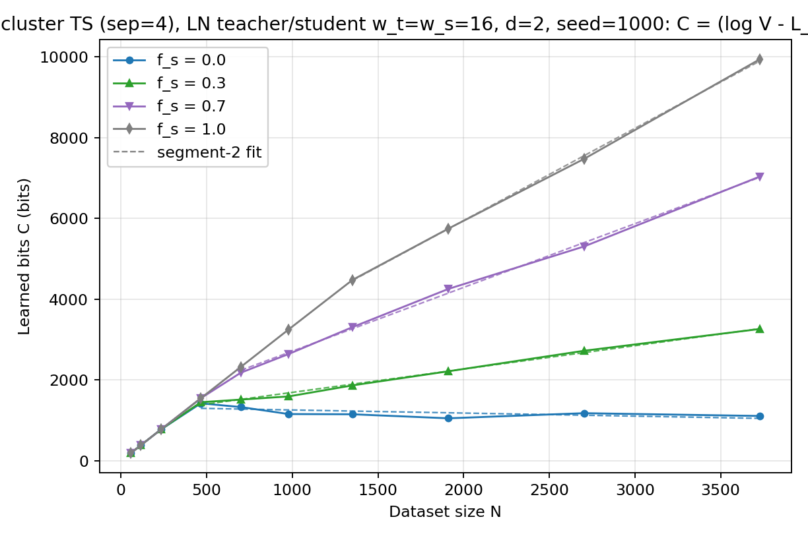
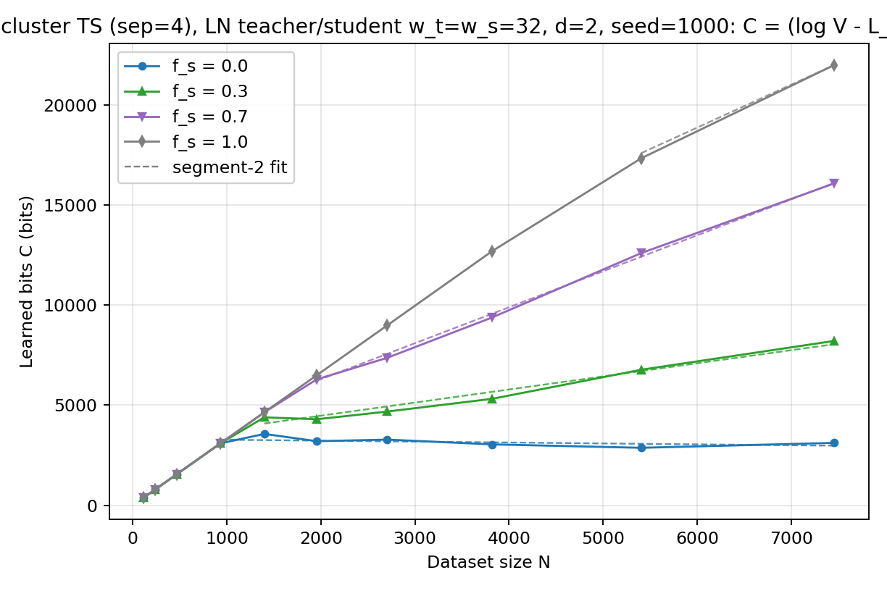
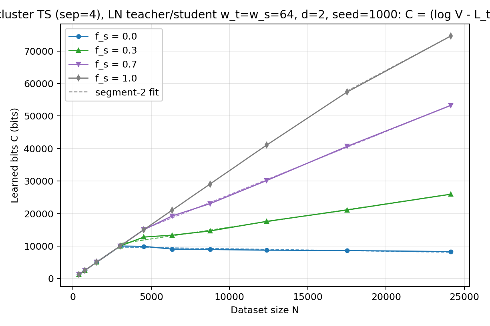
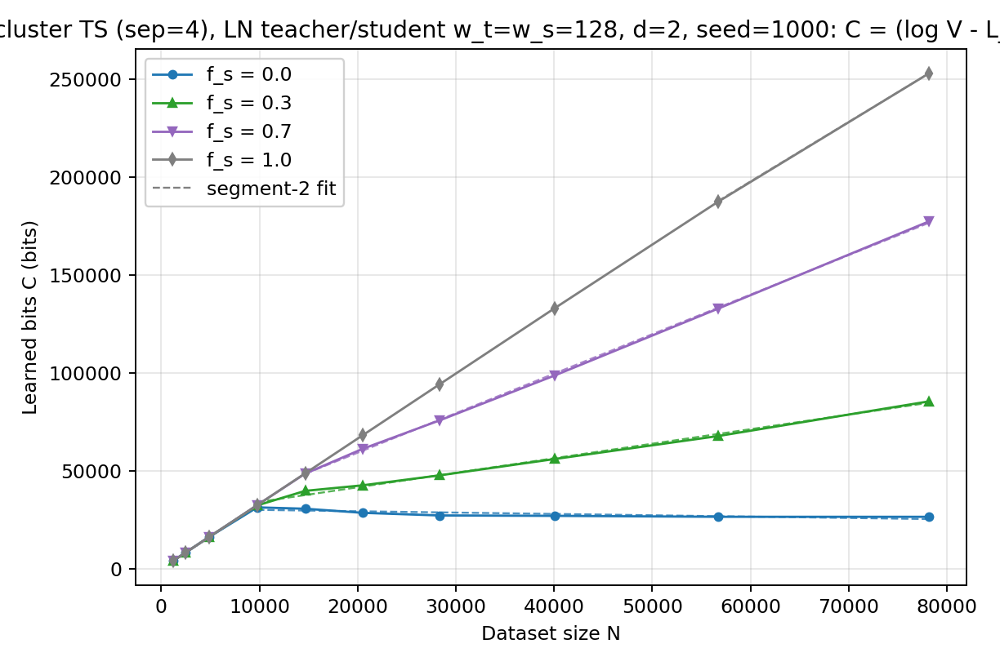
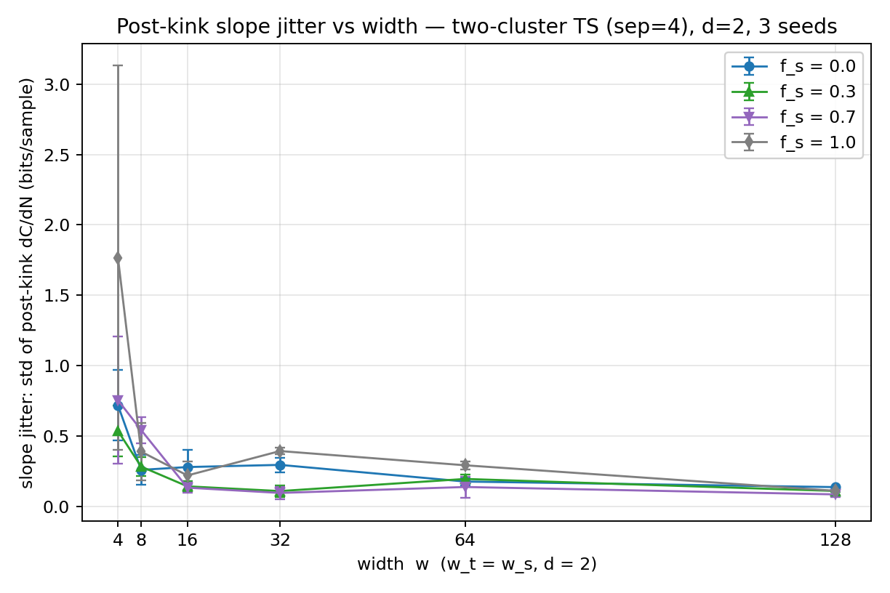
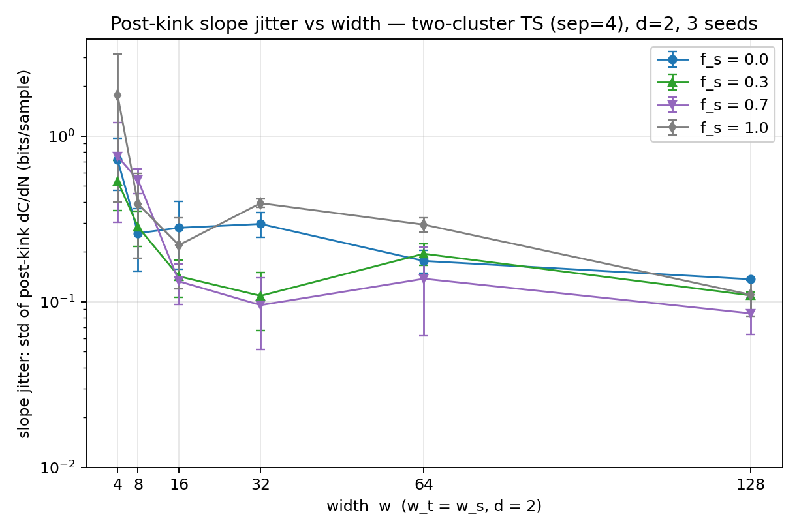
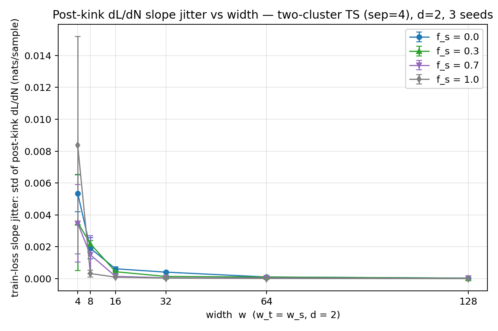
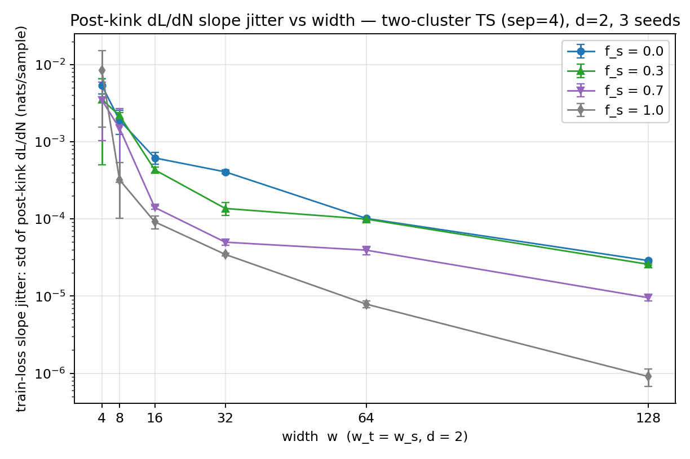

实验总结：双簇 Teacher-Student 协议下 C~N 曲线随 Teacher/Student 宽度的变化
运行目录：experiments/20260821_2032_width_ts_sweep（远程 cephfs）；
脚本：width_ts_sweep.py（run 目录内留有副本）；日期：2026-08-21 至 2026-08-22。
1. 实验任务
在双簇（two-cluster）teacher-student 协议下，当 teacher 与 student 等宽（wt = ws = w）、深度均为 2 时，对 6 个宽度 w ∈ {4, 8, 16, 32, 64, 128}、4 个结构比例 fs ∈ {0.0, 0.3, 0.7, 1.0}，扫描数据集大小 N，记录训练结束后学生记住的信息量 C 随 N 变化的曲线（C~N 曲线），并量化曲线拐点之后相邻点斜率的抖动（slope jitter）。
2. 实验设置（协议）
2.1 数据生成（双簇协议，与 20260819 twocluster 运行一致）
- 输入维数 D = 10，类别数 V = 10（log2V ≈ 3.322 bits/样本）。
- 每个 seed 随机取一个单位向量 u，两个簇中心为 μA = +(sep/2)·u、μB = −(sep/2)·u，sep = 4.0。样本 x = μc + z，z ~ N(0, ID)。由于两簇中心分离，样本属于哪个簇可以从 x 上读出来。
- 训练集共 N 个样本：前 round(fs·N) 个来自簇 A（"结构化"部分），标签由 teacher 网络给出；其余 N − round(fs·N) 个来自簇 B（"随机"部分），标签为均匀随机整数。
- 验证集：200 个来自簇 A 的新样本 + teacher 标签。
- 数据非嵌套：每个 (seed, N) 独立抽样；每个 seed 对应一个独立初始化的 teacher。
- 随机数种子（与 20260819 运行逐行一致）：teacher 初始化
torch.manual_seed(seed)；簇中心生成器 seed*7919+13；训练数据生成器 seed*1000003+N；验证集生成器 seed+777；student 初始化 set_seed(seed+1)。
2.2 模型
- Teacher（TeacherMLPLN）：bias-free Linear → LayerNorm → ReLU 的隐层块 × dt = 2，之后接 BatchNorm1d 头（BN 头）+ bias-free Linear 投影到 V 类。BN 头在 batch 维上对每个类别的 logit 归一化，使 teacher 的 argmax 标签近似类别平衡（每样本标签信息量 ≈ log2V）。teacher 参数生成后冻结。
- Student（StudentMLPLN）：同样的 Linear → LayerNorm → ReLU 隐层块 × ds = 2，最后直接接 bias-free Linear 读出到 V 类（无 BN 头）。
- 两个模型类定义逐行复制自 20260819 运行的
run.py（当时 cephfs 上的 protocols/strucfrac.py 版本较旧，不含 LN 模型，因此本脚本自包含）。
- teacher 标签的 batch 依赖：teacher 在生成标签时置于 train 模式，对"簇 A 训练样本 + 验证集样本"整体做一次前向，BN 头的 batch 统计由这批数据计算（与 N 无关的部分固定）；生成标签后 teacher 回到 eval 模式。
2.3 训练
- 全批量 Adam，lr = 1e-3，cosine 衰减到 0，30000 epochs，无早停。
- 训练过程中在约 60 个对数间隔的 checkpoint 记录完整曲线：train loss、结构化/随机部分的分别 loss（l1/l2）与精确记忆比例（em1/em2）、验证 loss 与验证准确率。
2.4 运行规模与执行
- seeds：{1000, 1007, 1014}；探针阶段只用 seed = 1000。
- 总 run 数 708：w ∈ {4,8,16,32} 的 468 runs 在 60 核 CPU 机器（10.230.1.20）上以 28 进程池完成（每进程 torch 2 线程）；w ∈ {64,128} 的 240 runs 在 H100 GPU 机器（10.230.1.34）上以 12 进程池共用一张 GPU 完成。
- 每 (w, fs) 组完成后立即将 per-run JSON 追加写入
results/main_runs.json 作为 checkpoint，中断后续跑自动跳过已完成的组。
3. 代码实现（两阶段网格）
3.1 阶段一：探针（probe）
目的：为每个宽度定位 fs = 0（纯随机标签）曲线的容量拐点 N*0。对每个宽度，在 [max(16, w), 200·w] 内取 12 个对数等间隔的 N，只跑 fs = 0、seed = 1000（每宽度 12 runs，共 72 runs）。对得到的 C~N 曲线做连续两段线性拟合（见 4.2），拟合的拐点位置即 N*0。实测结果：
| w | 4 | 8 | 16 | 32 | 64 | 128 |
|---|
| N*0 | 47 | 130 | 466 | 932 | 3018 | 9769 |
| 拟合 R² | 0.63 | 0.95 | 0.98 | 0.99 | 0.999 | 0.999 |
3.2 阶段二：主扫描（main）
每个宽度的 N 网格围绕自己的 N*0 生成，共 10 个点（w = 4 时因下限 16 合并为 9 点），同一宽度内 4 个 fs 共享该网格：
- 拐点前 3 点：N*0 × {1/8, 1/4, 1/2}（下限 16）；
- 拐点处 1 点：N*0；
- 拐点后 6 点：N*0 × {1.5, 2.1, 2.9, 4.1, 5.8, 8.0}（上限 80000）。
| w | N 网格（实际取整后） |
|---|
| 4 | 16, 24, 47, 70, 99, 136, 193, 273, 376 |
| 8 | 16, 32, 65, 130, 195, 273, 377, 533, 754, 1040 |
| 16 | 58, 116, 233, 466, 699, 979, 1351, 1911, 2703, 3728 |
| 32 | 116, 233, 466, 932, 1398, 1957, 2703, 3821, 5406, 7456 |
| 64 | 377, 754, 1509, 3018, 4527, 6338, 8752, 12374, 17504, 24144 |
| 128 | 1221, 2442, 4884, 9769, 14654, 20515, 28330, 40053, 56660, 78152 |
每个 (w, fs, N) 组合跑 3 个 seed，共 6 宽 × 4 fs × ~10 N × 3 seeds ≈ 708 runs（含探针 72）。
3.3 输出文件
results/probe_runs.json、results/main_runs.json：每个 run 一条记录，含最终 train loss、C_bits、分区指标、val 指标、运行时长，以及全部 checkpoint 的完整 loss 曲线；results/grids.json：各宽度的 N*0 与主网格；results/summary.json：每条 (w, fs, seed) 曲线的分段拟合参数与 jitter；figures/：8 张图（见第 5 节）。
4. 数据与量的定义
4.1 学习比特数 C（C~N 曲线的纵轴）
对每个 run，取训练结束（30000 epochs）时的全训练集交叉熵 Ltrain，定义每样本学习比特数与总量：
bits/sample = max(ln V − L_train, 0) / ln 2
C (bits) = bits/sample × N
其中 ln V 是 V 类均匀标签的熵（交叉熵的随机水平）。Ltrain 越低说明学生对训练标签拟合得越死，C 越大。每条 C~N 曲线就是一个 (w, fs, seed) 下约 10 个 N 值对应的 C 值连成的折线。
4.2 连续两段线性拟合（虚线与拐点的来源）
对每条 C~N 曲线，在所有内部网格点上搜索候选拐点 x*，用设计矩阵 [1, N, max(N−x*, 0)] 做最小二乘，取残差最小的 x* 作为拐点 N*。输出参数：segment-1 斜率 s1、segment-2 斜率 s2、拐点位置、R²。图中的同色虚线画的是拟合的 segment-2 段（从 N* 到最大 N）。
4.3 斜率抖动（slope jitter）
对一条 C~N 曲线，取拐点 N* 之后的所有网格点，计算相邻两点之间的斜率 si = (Ci+1 − Ci) / (Ni+1 − Ni)（单位 bits/sample），jitter = 这些斜率的标准差。每条曲线用自己的拟合拐点；若拟合退化（拐点落在网格末尾、拐后不足 3 点，fs = 1 的曲线常如此），则退回使用同宽度 fs = 0 曲线的拐点作为阈值。jitter 图中每个数据点是 3 个 seed 的均值，error bar 为 3 个 seed 的标准差。
注意：各宽度网格的拐后点间隔 ΔN 随宽度同比放大（网格按 N*0 的倍数生成），大宽度下每个斜率是对更大 N 窗口的平均。
4.4 训练损失斜率抖动（train-loss slope jitter）
C 由 Ltrain 乘以 N 得到，逐点噪声随之被放大 N 倍。为去掉这一放大作用，对同一批 run 直接取训练结束时的 Ltrain 对 N 的折线，在拐点之后（阈值与 4.3 相同，含 fs = 0 回退）计算相邻点斜率 si = (Li+1 − Li) / (Ni+1 − Ni)，取标准差，单位 nats/sample（Ltrain 为自然对数交叉熵）。
5. 图
5.1 C~N 曲线（每宽度一张，共 6 张）
- 横轴：数据集大小 N（线性）；纵轴：学习比特数 C（bits）。
- 实线+标记：seed = 1000 的实测数据点，4 种颜色/标记对应 4 个 fs（蓝圆 0.0、绿三角 0.3、紫倒三角 0.7、灰菱形 1.0）。
- 同色虚线：该曲线连续两段线性拟合的 segment-2 段。
 Figure 1.C~N 曲线，w = 4
Figure 1.C~N 曲线，w = 4
 Figure 2.C~N 曲线，w = 8
Figure 2.C~N 曲线，w = 8

Figure 3.C~N 曲线，w = 16

Figure 4.C~N 曲线，w = 32

Figure 5.C~N 曲线，w = 64

Figure 6.C~N 曲线，w = 128
5.2 斜率抖动图（2 张，同一数据的两种纵轴）
- 横轴：宽度 w（线性，wt = ws，d = 2）；纵轴：slope jitter（bits/sample），第一张线性、第二张对数。
- 每个宽度 4 个点：对应 4 个 fs（颜色/标记同上），点的纵坐标为 3 个 seed 的 jitter 均值，error bar 为 3 个 seed 的标准差。
- 线：同一 fs 的点按宽度顺序相连。
- 每个点参与计算的斜率个数记录在
results/summary.json 的 n_slopes 字段（fs 越大，拐点越靠右，拐后点数越少）。

Figure 7.slope jitter vs width（纵轴线性）

Figure 8.slope jitter vs width（纵轴对数）
5.3 训练损失斜率抖动图（2 张，同一数据的两种纵轴）
- 横轴：宽度 w（线性）；纵轴：train-loss slope jitter（nats/sample），第一张线性、第二张对数。
- 点、error bar、连线的含义与 5.2 相同；拐点阈值与 C 版 jitter 完全一致（含 fs = 0 回退）。

Figure 9.train-loss slope jitter vs width（纵轴线性）

Figure 10.train-loss slope jitter vs width（纵轴对数）
6. 数值记录（seed = 1000，来自 summary.json 与探针拟合）
- fs = 0 曲线的容量拐点（探针拟合）：N*0 = 47 / 130 / 466 / 932 / 3018 / 9769（w = 4/8/16/32/64/128）；探针拟合的 segment-1 斜率 s1 ≈ 2.1 / 3.1 / 2.8 / 3.5 / 3.3 / 3.2 bits/sample（log2V = 3.32）。
- fs = 0 曲线在最大 N 处的 C 值（约等于平台高度）：w=4 约 100 bits、w=8 约 450、w=16 约 1100、w=32 约 3000、w=64 约 9000、w=128 约 26000 bits。
- fs = 1 曲线在各自最大 N 处的 C/N：w=16 约 2.66、w=32 约 2.95、w=64 约 3.07、w=128 约 3.24 bits/sample（log2V = 3.32）。
- jitter 均值（3 seeds）：w=128 处 4 个 fs 均落在约 0.08–0.14 bits/sample；w=4 的 fs = 1.0 均值为 1.77（seed 间标准差约 1.4）。